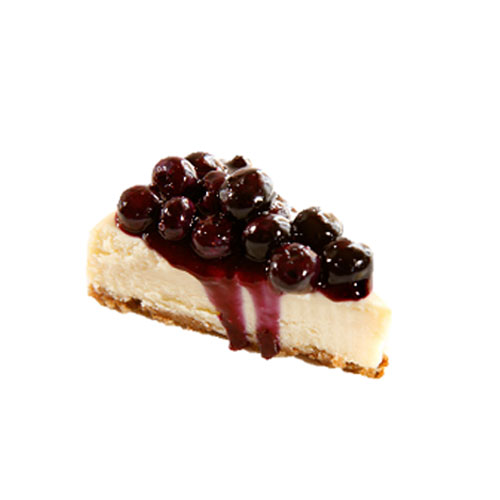

|  |
Blueberry Cheesecake
- Blueberry Cheesecake
-
Blueberry Cheesecake is a sweet dessert consisting of one or more layers. The main, and thickest layer, consists of a mixture of soft, fresh cheese (typically cream cheese or ricotta), eggs, and sugar. If there is a bottom layer, it often consists of a crust or base made from crushed cookies (or digestive biscuits), graham crackers, pastry, or sometimes sponge cake.[1] It may be baked or unbaked (usually refrigerated)
Ingredients
- Cheese
- Graham Cracker
- Pastry
- Sugar
Back to Menu |